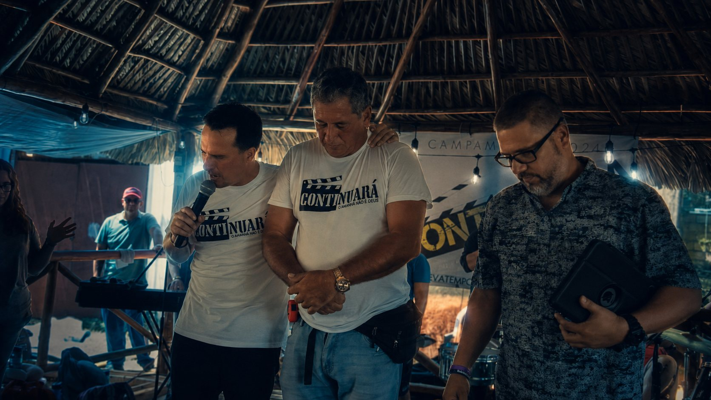
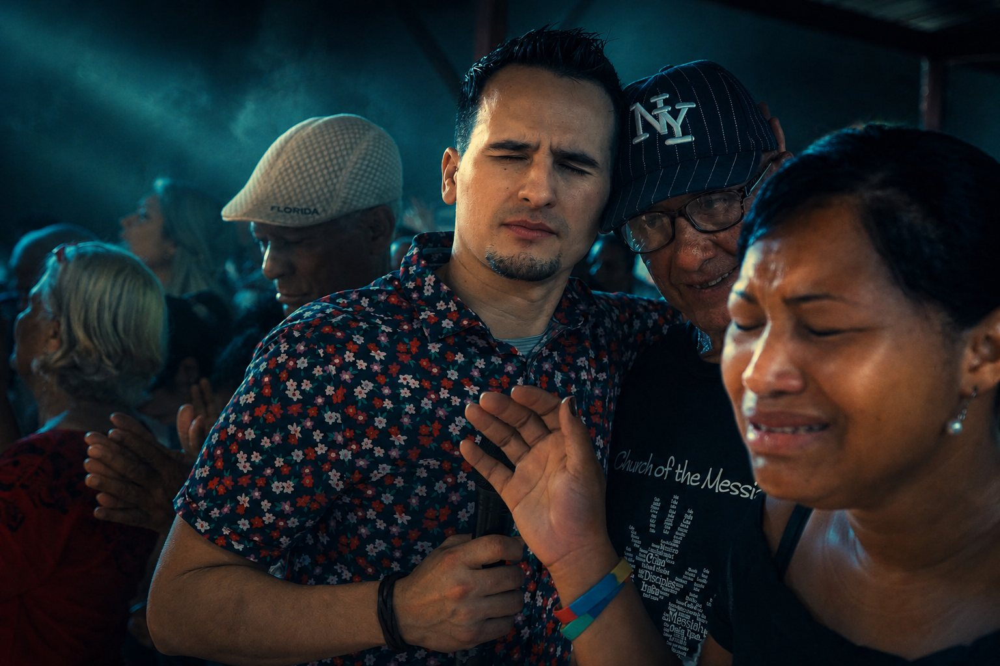
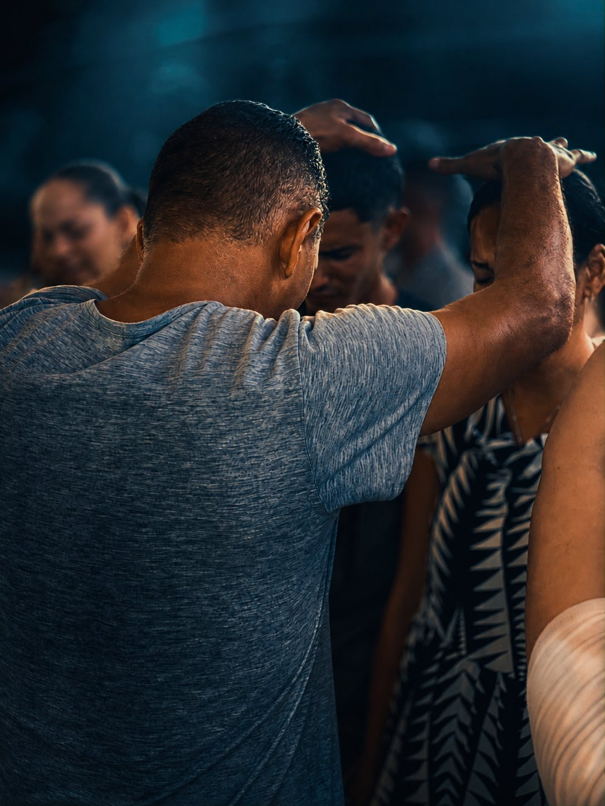
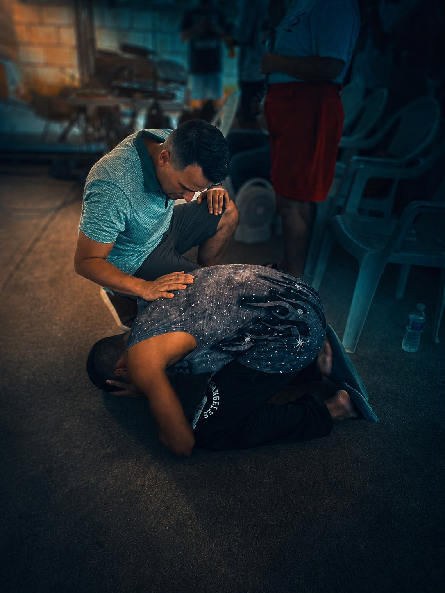
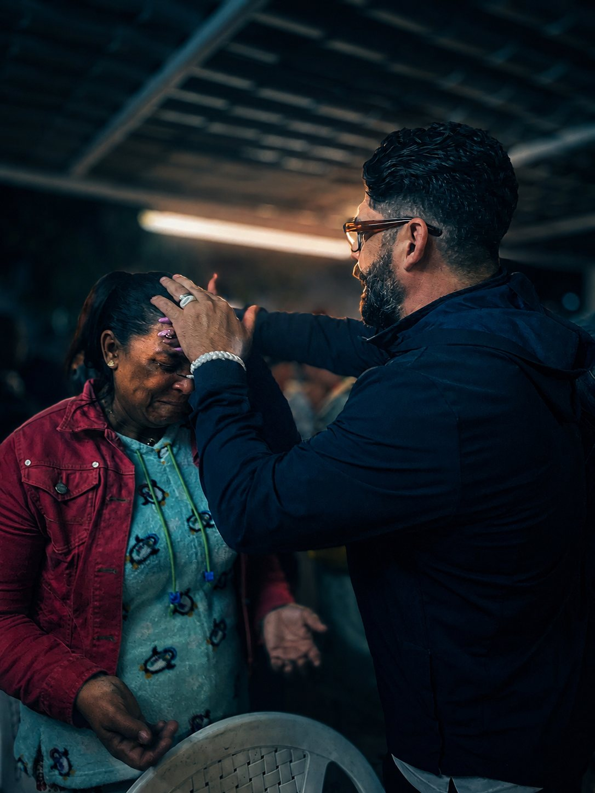
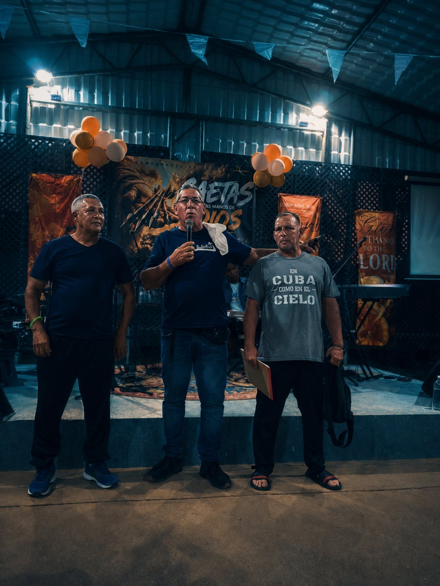
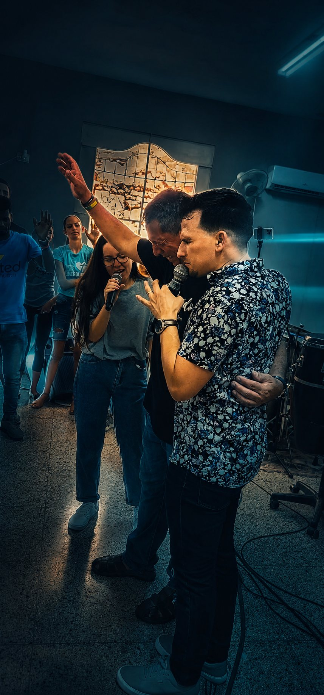

Dios diseñó el llamado para que se camine acompañado. La cobertura no es una estructura de poder: es la relación que sostiene lo que Él ya puso en vos.
God designed the calling to be walked out in company. Covering is not a power structure: it is the relationship that sustains what He already placed in you.

Muchos pastores cargan solos un peso que Dios nunca quiso que llevaran sin compañía: las decisiones difíciles, las temporadas de presión, las preguntas que no se pueden hacer en voz alta frente a la congregación.
Many pastors carry alone a weight God never intended them to carry without company: the hard decisions, the seasons of pressure, the questions that cannot be asked out loud in front of the congregation.
Kingdom in Action Family es una familia del Reino donde los títulos no determinan el valor de una persona. Reconocemos dones, funciones y llamados, pero nuestra identidad más alta es ser hijos e hijas de Dios.
Kingdom in Action Family is a Kingdom family where titles do not determine a person's worth. We recognize gifts, functions and callings, but our highest identity is being sons and daughters of God.
Somos iglesias, ministerios, pastores, líderes y empresarios unidos por relación, propósito y misión. No buscamos control, posiciones ni jerarquías. Buscamos caminar juntos.
We are churches, ministries, pastors, leaders and business owners united by relationship, purpose and mission. We are not seeking control, positions or hierarchies. We are seeking to walk together.
No estamos construyendo nuestro propio reino. Estamos trabajando juntos para la expansión del Reino de Dios.
We are not building our own kingdom. We are working together for the expansion of the Kingdom of God.



A través de nuestra red alcanzamos y alimentamos a más de 20.000 personas cada mes en comunidades vulnerables de tres naciones.
Through our network we reach and feed more than 20,000 people every month in vulnerable communities across three nations.

En Kingdom in Action Family no entendemos la cobertura como una estructura diseñada para colocar a una persona por debajo de otra, sino como una relación de alineación espiritual que conecta, fortalece, corrige, equipa y empodera.
At Kingdom in Action Family we do not understand covering as a structure designed to place one person beneath another, but as a relationship of spiritual alignment that connects, strengthens, corrects, equips and empowers.
Nuestra cobertura no existe para controlar el llamado de un pastor, apropiarse de su visión o gobernar su iglesia local. Existe para caminar a su lado, ayudarlo a discernir lo que Dios está haciendo, fortalecer su identidad, brindar relación, consejo y rendición de cuentas, y acompañarlo mientras madura y avanza hacia la asignación que Dios puso sobre su vida.
Our covering does not exist to control a pastor's calling, take ownership of his vision or govern his local church. It exists to walk alongside him, help him discern what God is doing, strengthen his identity, provide relationship, counsel and accountability, and accompany him as he matures and moves toward the assignment God has placed on his life.
"La cobertura no viene a reemplazar tu llamado; viene a caminar con vos y ayudarte a cumplirlo."
"Covering does not come to replace your calling; it comes to walk with you and help you fulfill it."Kingdom in Action Family
Reconocemos que la imagen de un paraguas puede comunicar correctamente protección, cuidado y acompañamiento espiritual. Sin embargo, también usamos la imagen de una antena espiritual para expresar otra dimensión importante de la cobertura.
We recognize that the image of an umbrella can rightly communicate protection, care and spiritual accompaniment. However, we also use the image of a spiritual antenna to express another important dimension of covering.
Una antena correctamente alineada puede recibir con claridad y transmitir con fidelidad. De la misma manera, creemos que las relaciones espirituales correctas nos ayudan a escuchar con mayor claridad, permanecer conectados, recibir sabiduría y dirección, y desarrollar fielmente lo que Dios ha depositado en nosotros.
A properly aligned antenna can receive with clarity and transmit with fidelity. In the same way, we believe the right spiritual relationships help us hear more clearly, remain connected, receive wisdom and direction, and faithfully develop what God has deposited within us.
Por esta razón nuestro propósito no es que una persona dependa de nosotros permanentemente, sino ayudarla a crecer hacia la madurez necesaria para discernir, desarrollar y cumplir su propia asignación en Dios.
For this reason our purpose is not that a person depend on us permanently, but that we help them grow into the maturity needed to discern, develop and fulfill their own assignment in God.
Una cobertura sana no reduce tu identidad ni reemplaza tu voz: crea una relación de alineación espiritual que trae claridad, apoyo, corrección, conexión y activación para ayudarte a llegar más lejos.
A healthy covering does not reduce your identity or replace your voice: it creates a relationship of spiritual alignment that brings clarity, support, correction, connection and activation to help you go further.
Una cobertura sana no crea dependencia. Produce madurez, fortalece la identidad y empodera el destino.
Healthy covering does not create dependency. It produces maturity, strengthens identity and empowers destiny.
Te acompañamos hasta que tengas la madurez para discernir, desarrollar y cumplir tu propia asignación en Dios.
We walk with you until you have the maturity to discern, develop and fulfill your own assignment in God.
Kingdom in Action Family no adquiere autoridad legal, propiedad ni control corporativo sobre ninguna iglesia. No controlamos propiedades, cuentas bancarias, contratos, empleados ni la junta directiva. Nuestra autoridad nace de una relación espiritual voluntaria con el pastor.
Kingdom in Action Family does not acquire legal authority, ownership or corporate control over any church. We do not control property, bank accounts, contracts, employees or the board of directors. Our authority is born of a voluntary spiritual relationship with the pastor.
Cubrimos espiritualmente al pastor. El pastor y el liderazgo establecido de la iglesia local son responsables de pastorear y gobernar la congregación. A través de esta relación buscamos ofrecer:
We spiritually cover the pastor. The pastor and the established leadership of the local church are responsible for shepherding and governing the congregation. Through this relationship we seek to offer:
No existe una cuota, diezmo obligatorio ni evaluación monetaria como condición para recibir cobertura. Muchos eligen honrar con su ofrenda o diezmo, pero la contribución financiera nunca determinará la relación.
There is no fee, mandatory tithe or monetary assessment as a condition for receiving covering. Many choose to honor with their offering or tithe, but financial contribution will never determine the relationship.
Sin apuro y sin presión. Todo empieza con una conversación.
No rush and no pressure. It all begins with a conversation.
No queremos que cumplas nuestra visión. Queremos ayudarte a cumplir aquello a lo que Dios te llamó.
We do not want you to fulfill our vision. We want to help you fulfill what God called you to.
Tu donación sostiene misiones en 3 naciones.
Your donation supports missions in 3 nations.
100% va al campo misionero.
100% goes to the mission field.